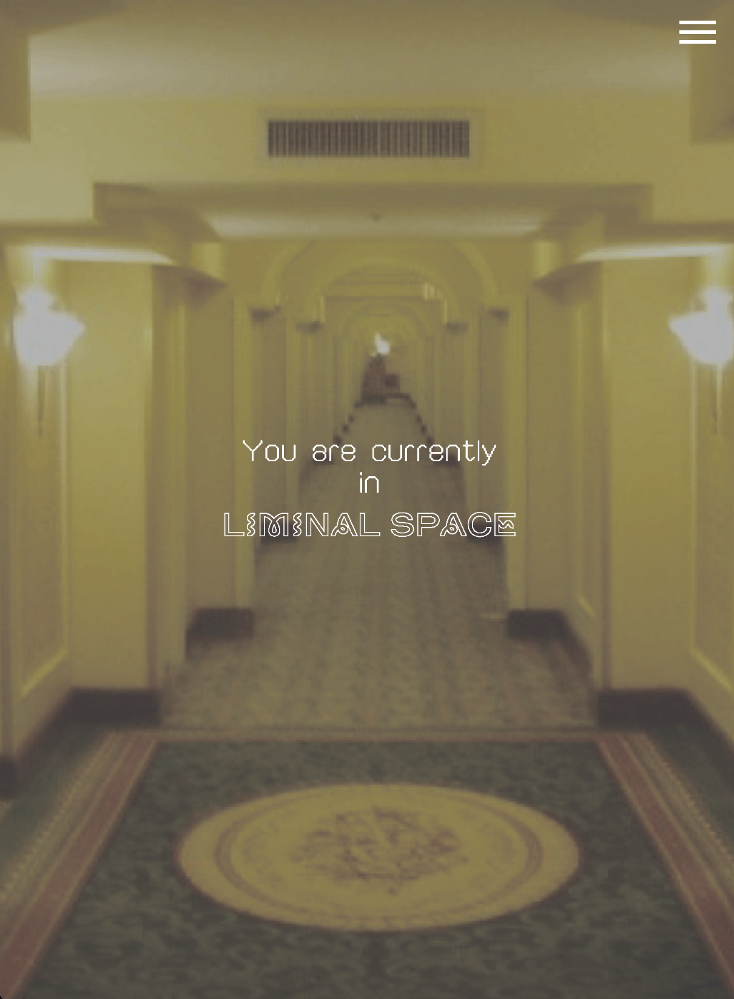

HTML / CSS / JavaScript

Liminal Space Site
OPEN WEBSITE →YEAR
TYPE
TOOLS
ROLE
2026
Introduce Website
HTML / CSS / JavaScript
Design & Coding
I created this site to share the appeal of liminal spaces. Here, you can learn about their many different charms.
This is the first website I’ve built from scratch, so it’s a project I’m quite attached to.
HTML
CSS
JavaScript
Total
Structure & Semantic Layout
Responsive Design & Animation
Interactive Effects & Navigation
100% Hand Coded